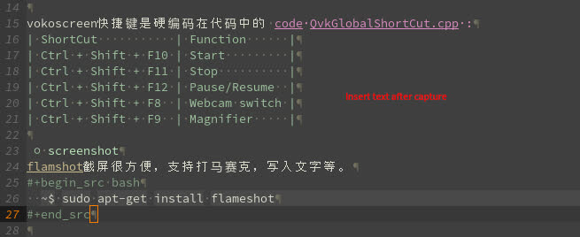

录屏与截屏
目录
1 install and config
1.1 screencast software
vokoscreen-NG(Vokoscreen New Generation)上手简单，功能丰富。代码在这里github vokoscreen。
debian安装：
[yanyg@t440{192.168.1.110} ~/bin ] <2020-11-14 13:18:51>
$ sudo apt-get install vokoscreen-ng
vokoscreen快捷键是硬编码在代码中的 code QvkGlobalShortCut.cpp :
| ShortCut | Function |
| Ctrl + Shift + F10 | Start |
| Ctrl + Shift + F11 | Stop |
| Ctrl + Shift + F12 | Pause/Resume |
| Ctrl + Shift + F8 | Webcam switch |
| Ctrl + Shift + F9 | Magnifier |
1.2 screenshot
flameshot截屏很方便，支持打马赛克，写入文字等。
~$ sudo apt-get install flameshot
1.3 X11配置
Debian buster 默认使用Wayland。Vokoscreen不支持Wayland, 需要切回Xorg，修改
/etc/gdm3/daemon.conf 设置 WaylandEnable=false。
# GDM configuration storage # # See /usr/share/gdm/gdm.schemas for a list of available options. [daemon] # Uncomment the line below to force the login screen to use Xorg WaylandEnable=false
Wayland is a communication protocol that specifies the communication between a display server and its clients. A display server using the Wayland protocol is called a Wayland compositor, because it additionally performs the task of a compositing window manager.
1.4 Resolution
现在屏幕分辨率都比较高，生成视频占用空间大，可以用 ffmpeg 进行任意调整。
例如，将 1600x900 录屏文件调整为 640x480:
~$ ffmpeg -i vokoscreen.orig.mp4 -vf scale=640:360 -hide_banner vokoscreen.mp4
2 example
A record example with resolution 640x480:
A flameshot capture with resolution 655x268:
